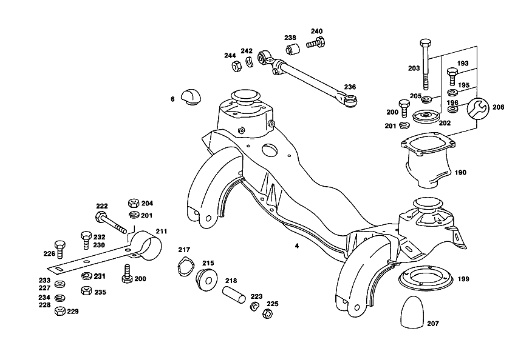

| № | Артикул | Название | Кол. | Примечание | Ограничение |
|---|---|---|---|---|---|
| 4 | A 111 330 30 42 | ПОДРАМНИК ПЕР. МОСТА | 1 | [003] 010 FROM CHASSIS 023661 ALSO INSTALLED ON,SEE FOOTNOTE 22;012 FROM CHASSIS 049856 ALSO INSTALLED ON,SEE FOOTNOTE 23 [022] 023626- 023628, 023631, 023633, 023636, 023639, 023640, 023642- 023644, 023646- 023649, 023651- 023659. [023] 048590, 049219, 049222, 049255, 049260, 049472, 049593, 049664, 049680, 049681, 049684, 049702, 049706, 049725, 049734, 049753, 049770, 049779, 049781, 049787, 049789, 049791, 049793- 049795, 049799- 049801, 049803- 049805, 049807- 049824, 049826- 049837, 049839- 049843, 049845- 049849, 049851- 049854. | |
| 6 | A 112 333 01 65 | Резиновый буфер | 4 | ||
| 15 | A 111 330 30 20 | ПОВОРОТНЫЙ КУЛАК | 1 | LEFT TO FRONT AXLE с DRUM BRAKES Коробка передач [002] 010 UP TO CHASSIS 023660 EXCEPT FOR,SEE FOOTNOTE 22;012 UP TO CHASSIS 049855 EXCEPT FOR,SEE FOOTNOTE 23 [022] 023626- 023628, 023631, 023633, 023636, 023639, 023640, 023642- 023644, 023646- 023649, 023651- 023659. [023] 048590, 049219, 049222, 049255, 049260, 049472, 049593, 049664, 049680, 049681, 049684, 049702, 049706, 049725, 049734, 049753, 049770, 049779, 049781, 049787, 049789, 049791, 049793- 049795, 049799- 049801, 049803- 049805, 049807- 049824, 049826- 049837, 049839- 049843, 049845- 049849, 049851- 049854. | |
| 15 | A 111 330 31 20 | ПОВОРОТНЫЙ КУЛАК | 1 | RIGHT TO FRONT AXLE с DRUM BRAKES Коробка передач [002] 010 UP TO CHASSIS 023660 EXCEPT FOR,SEE FOOTNOTE 22;012 UP TO CHASSIS 049855 EXCEPT FOR,SEE FOOTNOTE 23 [022] 023626- 023628, 023631, 023633, 023636, 023639, 023640, 023642- 023644, 023646- 023649, 023651- 023659. [023] 048590, 049219, 049222, 049255, 049260, 049472, 049593, 049664, 049680, 049681, 049684, 049702, 049706, 049725, 049734, 049753, 049770, 049779, 049781, 049787, 049789, 049791, 049793- 049795, 049799- 049801, 049803- 049805, 049807- 049824, 049826- 049837, 049839- 049843, 049845- 049849, 049851- 049854. | |
| 15 | A 111 330 22 20 | ПОВОРОТНЫЙ КУЛАК | 1 | LEFT TO FRONT AXLE с DRUM BRAKES Коробка передач [003] 010 FROM CHASSIS 023661 ALSO INSTALLED ON,SEE FOOTNOTE 22;012 FROM CHASSIS 049856 ALSO INSTALLED ON,SEE FOOTNOTE 23 [022] 023626- 023628, 023631, 023633, 023636, 023639, 023640, 023642- 023644, 023646- 023649, 023651- 023659. [023] 048590, 049219, 049222, 049255, 049260, 049472, 049593, 049664, 049680, 049681, 049684, 049702, 049706, 049725, 049734, 049753, 049770, 049779, 049781, 049787, 049789, 049791, 049793- 049795, 049799- 049801, 049803- 049805, 049807- 049824, 049826- 049837, 049839- 049843, 049845- 049849, 049851- 049854. | |
| 15 | A 111 330 22 20 | ПОВОРОТНЫЙ КУЛАК | 1 | LEFT TO FRONT AXLE с DRUM BRAKES [004] 010,10/50,12/52 UP TO CHASSIS 048976 EXCEPT FOR,SEE FOOTNOTE 24;010,20/60,22/62 UP TO CHASSIS 049090 EXCEPT FOR 046334,048382,048491;012 UP TO CHASSIS 070637 [024] 044859, 046394, 048273, 048278, 048347, 048349, 048366, 048379, 048460, 048481, 048493, 048510, 048905- 048913, 048915- 048928, 048930- 048933, 048935- 048937, 048940, 048942, 048952- 048954, 048956, 048966, 048968- 048973. | |
| 15 | A 111 330 23 20 | ПОВОРОТНЫЙ КУЛАК | 1 | RIGHT TO FRONT AXLE с DRUM BRAKES Коробка передач [003] 010 FROM CHASSIS 023661 ALSO INSTALLED ON,SEE FOOTNOTE 22;012 FROM CHASSIS 049856 ALSO INSTALLED ON,SEE FOOTNOTE 23 [022] 023626- 023628, 023631, 023633, 023636, 023639, 023640, 023642- 023644, 023646- 023649, 023651- 023659. [023] 048590, 049219, 049222, 049255, 049260, 049472, 049593, 049664, 049680, 049681, 049684, 049702, 049706, 049725, 049734, 049753, 049770, 049779, 049781, 049787, 049789, 049791, 049793- 049795, 049799- 049801, 049803- 049805, 049807- 049824, 049826- 049837, 049839- 049843, 049845- 049849, 049851- 049854. | |
| 15 | A 111 330 23 20 | ПОВОРОТНЫЙ КУЛАК | 1 | RIGHT TO FRONT AXLE с DRUM BRAKES [004] 010,10/50,12/52 UP TO CHASSIS 048976 EXCEPT FOR,SEE FOOTNOTE 24;010,20/60,22/62 UP TO CHASSIS 049090 EXCEPT FOR 046334,048382,048491;012 UP TO CHASSIS 070637 [024] 044859, 046394, 048273, 048278, 048347, 048349, 048366, 048379, 048460, 048481, 048493, 048510, 048905- 048913, 048915- 048928, 048930- 048933, 048935- 048937, 048940, 048942, 048952- 048954, 048956, 048966, 048968- 048973. | |
| 18 | A 111 330 38 20 | ПОВОРОТНЫЙ КУЛАК | 1 | LEFT TO FRONT AXLE с DISC BRAKES [005] 010,10/50,12/52 FROM CHASSIS 048977 ALSO INSTALLED ON,SEE FOOTNOTE 24;010,20/60,22/62 FROM CHASSIS 049091 ALSO INSTALLED ON 046334,048382,048491;012 FROM CHASSIS 070638 [024] 044859, 046394, 048273, 048278, 048347, 048349, 048366, 048379, 048460, 048481, 048493, 048510, 048905- 048913, 048915- 048928, 048930- 048933, 048935- 048937, 048940, 048942, 048952- 048954, 048956, 048966, 048968- 048973. | |
| 18 | A 111 330 39 20 | ПОВОРОТНЫЙ КУЛАК | 1 | RIGHT TO FRONT AXLE с DISC BRAKES [005] 010,10/50,12/52 FROM CHASSIS 048977 ALSO INSTALLED ON,SEE FOOTNOTE 24;010,20/60,22/62 FROM CHASSIS 049091 ALSO INSTALLED ON 046334,048382,048491;012 FROM CHASSIS 070638 [024] 044859, 046394, 048273, 048278, 048347, 048349, 048366, 048379, 048460, 048481, 048493, 048510, 048905- 048913, 048915- 048928, 048930- 048933, 048935- 048937, 048940, 048942, 048952- 048954, 048956, 048966, 048968- 048973. | |
| 20 | A 180 332 01 48 | - втулка | 2 | СВЕРХУ | |
| 22 | N 000007 002208 | - Цилиндрический штифт | 2 | ||
| 24 | A 111 332 01 48 | - втулка | 2 | ВНИЗУ | |
| 26 | A 000 997 14 88 | ПРЕСС-МАСЛЁНКА | 2 | [004] 010,10/50,12/52 UP TO CHASSIS 048976 EXCEPT FOR,SEE FOOTNOTE 24;010,20/60,22/62 UP TO CHASSIS 049090 EXCEPT FOR 046334,048382,048491;012 UP TO CHASSIS 070637 [024] 044859, 046394, 048273, 048278, 048347, 048349, 048366, 048379, 048460, 048481, 048493, 048510, 048905- 048913, 048915- 048928, 048930- 048933, 048935- 048937, 048940, 048942, 048952- 048954, 048956, 048966, 048968- 048973. | |
| 26 | N 071412 008101 | ПРЕСС-МАСЛЁНКА | - | ||
| 26 | N 071412 008102 | Пресс-масленка | 2 | [005] 010,10/50,12/52 FROM CHASSIS 048977 ALSO INSTALLED ON,SEE FOOTNOTE 24;010,20/60,22/62 FROM CHASSIS 049091 ALSO INSTALLED ON 046334,048382,048491;012 FROM CHASSIS 070638 [024] 044859, 046394, 048273, 048278, 048347, 048349, 048366, 048379, 048460, 048481, 048493, 048510, 048905- 048913, 048915- 048928, 048930- 048933, 048935- 048937, 048940, 048942, 048952- 048954, 048956, 048966, 048968- 048973. | |
| 28 | A 120 332 02 60 | Пылезащитная крышка | 4 | ||
| 31 | A 120 332 00 51 | ДИСТАНЦИОННОЕ КОЛЬЦО | 2 | ||
| 33 | A 111 332 01 06 | Шкворень пов. кулака | 2 | ||
| 35 | A 094 990 95 08 | Пресс-масленка | 2 | ||
| 37 | A 120 332 01 62 | Прижимная шайба | 2 | ВНИЗУ | |
| 39 | A 120 332 02 62 | Прижимная шайба | 2 | СВЕРХУ | |
| 41 | A 136 332 08 52 | Компенсационная шайба | 2 | ПО НЕОБХОДИМОСТИ 1.7 MM | |
| 41 | A 136 332 09 52 | Компенсационная шайба | 2 | ПО НЕОБХОДИМОСТИ 1.9 MM | |
| 41 | A 136 332 10 52 | Компенсационная шайба | 2 | ПО НЕОБХОДИМОСТИ 2.1 MM | |
| 41 | A 136 332 00 52 | Компенсационная шайба | 2 | ПО НЕОБХОДИМОСТИ 2.3 MM | |
| 41 | A 136 332 01 52 | Компенсационная шайба | 2 | ПО НЕОБХОДИМОСТИ 2.5mm | |
| 41 | A 136 332 02 52 | Компенсационная шайба | 2 | ПО НЕОБХОДИМОСТИ 2.7 MM | |
| 45 | A 180 333 00 09 | Кронштейн пов. кулака | 2 | ||
| 47 | N 071412 008101 | ПРЕСС-МАСЛЁНКА | - | ||
| 47 | N 071412 008102 | Пресс-масленка | 2 | ||
| 49 | A 181 994 00 15 | Стопорная шайба | 2 | ||
| 50 | N 000934 014019 | Гайка | - | ||
| 50 | N 308673 014001 | Шестигранная гайка | 2 | M14X1.5 | |
| 51 | A 110 330 02 18 | Ремк-т поперечного рычага | 1 | ПОПЕРЕЧ.РЫЧАГ СВЕРХУ | |
| 52 | A 110 330 03 18 | Ремк-т поперечного рычага | 1 | ПОПЕРЕЧН. РЫЧАГ НИЖН. | |
| 53 | A 111 586 00 33 | ремкомплект | 2 | ПАЛЕЦ ПОВОР.КУЛАКА | |
| 54 | A 180 330 07 25 | СТУПИЦА ПЕРЕДНЕГО КОЛЕСА | 2 | с BOLTS TO FRONT AXLE WITH DRUM BRAKES Коробка передач [002] 010 UP TO CHASSIS 023660 EXCEPT FOR,SEE FOOTNOTE 22;012 UP TO CHASSIS 049855 EXCEPT FOR,SEE FOOTNOTE 23 [022] 023626- 023628, 023631, 023633, 023636, 023639, 023640, 023642- 023644, 023646- 023649, 023651- 023659. [023] 048590, 049219, 049222, 049255, 049260, 049472, 049593, 049664, 049680, 049681, 049684, 049702, 049706, 049725, 049734, 049753, 049770, 049779, 049781, 049787, 049789, 049791, 049793- 049795, 049799- 049801, 049803- 049805, 049807- 049824, 049826- 049837, 049839- 049843, 049845- 049849, 049851- 049854. | |
| 54 | A 110 330 03 25 | СТУПИЦА ПЕРЕДНЕГО КОЛЕСА | 2 | с BOLTS TO FRONT AXLE WITH DRUM BRAKES Коробка передач [003] 010 FROM CHASSIS 023661 ALSO INSTALLED ON,SEE FOOTNOTE 22;012 FROM CHASSIS 049856 ALSO INSTALLED ON,SEE FOOTNOTE 23 [022] 023626- 023628, 023631, 023633, 023636, 023639, 023640, 023642- 023644, 023646- 023649, 023651- 023659. [023] 048590, 049219, 049222, 049255, 049260, 049472, 049593, 049664, 049680, 049681, 049684, 049702, 049706, 049725, 049734, 049753, 049770, 049779, 049781, 049787, 049789, 049791, 049793- 049795, 049799- 049801, 049803- 049805, 049807- 049824, 049826- 049837, 049839- 049843, 049845- 049849, 049851- 049854. | |
| 54 | A 111 330 05 25 | СТУПИЦА ПЕРЕДНЕГО КОЛЕСА | 2 | с BOLTS TO FRONT AXLE WITH DISC BRAKES [004] 010,10/50,12/52 UP TO CHASSIS 048976 EXCEPT FOR,SEE FOOTNOTE 24;010,20/60,22/62 UP TO CHASSIS 049090 EXCEPT FOR 046334,048382,048491;012 UP TO CHASSIS 070637 [024] 044859, 046394, 048273, 048278, 048347, 048349, 048366, 048379, 048460, 048481, 048493, 048510, 048905- 048913, 048915- 048928, 048930- 048933, 048935- 048937, 048940, 048942, 048952- 048954, 048956, 048966, 048968- 048973. | |
| 56 | A 120 401 01 71 | - Шпилька крепления колеса | 10 | TO FRONT AXLE с DRUM BRAKES | |
| 56 | A 112 401 01 71 | - ШПИЛЬКА КРЕПЛЕНИЯ КОЛЕСА | 10 | TO FRONT AXLE с DISC BRAKES | |
| 58 | A 112 334 05 01 | Ступица переднего колеса | 2 | [009] 010 FROM CHASSIS 049494;012 FROM CHASSIS 110018 [013] NOT FOR USE WITH MERCEDES-BENZ HYDRAULIC-AUTOMATIC CLUTCH | |
| 61 | A 001 981 65 05 | Кон. роликоподшипник | 2 | ВНУТР. Коробка передач [002] 010 UP TO CHASSIS 023660 EXCEPT FOR,SEE FOOTNOTE 22;012 UP TO CHASSIS 049855 EXCEPT FOR,SEE FOOTNOTE 23 [022] 023626- 023628, 023631, 023633, 023636, 023639, 023640, 023642- 023644, 023646- 023649, 023651- 023659. [023] 048590, 049219, 049222, 049255, 049260, 049472, 049593, 049664, 049680, 049681, 049684, 049702, 049706, 049725, 049734, 049753, 049770, 049779, 049781, 049787, 049789, 049791, 049793- 049795, 049799- 049801, 049803- 049805, 049807- 049824, 049826- 049837, 049839- 049843, 049845- 049849, 049851- 049854. | |
| 61 | A 000 981 58 05 | Конический подшипник | 2 | ВНУТР. [003] 010 FROM CHASSIS 023661 ALSO INSTALLED ON,SEE FOOTNOTE 22;012 FROM CHASSIS 049856 ALSO INSTALLED ON,SEE FOOTNOTE 23 [022] 023626- 023628, 023631, 023633, 023636, 023639, 023640, 023642- 023644, 023646- 023649, 023651- 023659. [023] 048590, 049219, 049222, 049255, 049260, 049472, 049593, 049664, 049680, 049681, 049684, 049702, 049706, 049725, 049734, 049753, 049770, 049779, 049781, 049787, 049789, 049791, 049793- 049795, 049799- 049801, 049803- 049805, 049807- 049824, 049826- 049837, 049839- 049843, 049845- 049849, 049851- 049854. | |
| 63 | A 180 334 01 64 | Ремк-т пром.опоры кард. | 2 | СТУПИЦЫ ПЕРЕДНИХ КОЛЕС Коробка передач [002] 010 UP TO CHASSIS 023660 EXCEPT FOR,SEE FOOTNOTE 22;012 UP TO CHASSIS 049855 EXCEPT FOR,SEE FOOTNOTE 23 [022] 023626- 023628, 023631, 023633, 023636, 023639, 023640, 023642- 023644, 023646- 023649, 023651- 023659. [023] 048590, 049219, 049222, 049255, 049260, 049472, 049593, 049664, 049680, 049681, 049684, 049702, 049706, 049725, 049734, 049753, 049770, 049779, 049781, 049787, 049789, 049791, 049793- 049795, 049799- 049801, 049803- 049805, 049807- 049824, 049826- 049837, 049839- 049843, 049845- 049849, 049851- 049854. | |
| 63 | A 111 334 00 64 | ТАРЕЛКА | 2 | СТУПИЦЫ ПЕРЕДНИХ КОЛЕС [003] 010 FROM CHASSIS 023661 ALSO INSTALLED ON,SEE FOOTNOTE 22;012 FROM CHASSIS 049856 ALSO INSTALLED ON,SEE FOOTNOTE 23 [022] 023626- 023628, 023631, 023633, 023636, 023639, 023640, 023642- 023644, 023646- 023649, 023651- 023659. [023] 048590, 049219, 049222, 049255, 049260, 049472, 049593, 049664, 049680, 049681, 049684, 049702, 049706, 049725, 049734, 049753, 049770, 049779, 049781, 049787, 049789, 049791, 049793- 049795, 049799- 049801, 049803- 049805, 049807- 049824, 049826- 049837, 049839- 049843, 049845- 049849, 049851- 049854. | |
| 65 | A 000 997 18 46 | УПЛОТНИТ. КОЛЬЦО | 2 | СТУПИЦЫ ПЕРЕДНИХ КОЛЕС Коробка передач [002] 010 UP TO CHASSIS 023660 EXCEPT FOR,SEE FOOTNOTE 22;012 UP TO CHASSIS 049855 EXCEPT FOR,SEE FOOTNOTE 23 [022] 023626- 023628, 023631, 023633, 023636, 023639, 023640, 023642- 023644, 023646- 023649, 023651- 023659. [023] 048590, 049219, 049222, 049255, 049260, 049472, 049593, 049664, 049680, 049681, 049684, 049702, 049706, 049725, 049734, 049753, 049770, 049779, 049781, 049787, 049789, 049791, 049793- 049795, 049799- 049801, 049803- 049805, 049807- 049824, 049826- 049837, 049839- 049843, 049845- 049849, 049851- 049854. | |
| 65 | A 003 997 93 46 | Уплотнительное кольцо | 2 | [003] 010 FROM CHASSIS 023661 ALSO INSTALLED ON,SEE FOOTNOTE 22;012 FROM CHASSIS 049856 ALSO INSTALLED ON,SEE FOOTNOTE 23 [022] 023626- 023628, 023631, 023633, 023636, 023639, 023640, 023642- 023644, 023646- 023649, 023651- 023659. [023] 048590, 049219, 049222, 049255, 049260, 049472, 049593, 049664, 049680, 049681, 049684, 049702, 049706, 049725, 049734, 049753, 049770, 049779, 049781, 049787, 049789, 049791, 049793- 049795, 049799- 049801, 049803- 049805, 049807- 049824, 049826- 049837, 049839- 049843, 049845- 049849, 049851- 049854. | |
| 67 | N 000720 032303 | КОНИЧ. РОЛИКОПОДШИПНИК | 2 | СНАРУЖИ Коробка передач [002] 010 UP TO CHASSIS 023660 EXCEPT FOR,SEE FOOTNOTE 22;012 UP TO CHASSIS 049855 EXCEPT FOR,SEE FOOTNOTE 23 [022] 023626- 023628, 023631, 023633, 023636, 023639, 023640, 023642- 023644, 023646- 023649, 023651- 023659. [023] 048590, 049219, 049222, 049255, 049260, 049472, 049593, 049664, 049680, 049681, 049684, 049702, 049706, 049725, 049734, 049753, 049770, 049779, 049781, 049787, 049789, 049791, 049793- 049795, 049799- 049801, 049803- 049805, 049807- 049824, 049826- 049837, 049839- 049843, 049845- 049849, 049851- 049854. | |
| 67 | A 000 981 59 05 | Кон. роликоподшипник | 2 | СНАРУЖИ [003] 010 FROM CHASSIS 023661 ALSO INSTALLED ON,SEE FOOTNOTE 22;012 FROM CHASSIS 049856 ALSO INSTALLED ON,SEE FOOTNOTE 23 [022] 023626- 023628, 023631, 023633, 023636, 023639, 023640, 023642- 023644, 023646- 023649, 023651- 023659. [023] 048590, 049219, 049222, 049255, 049260, 049472, 049593, 049664, 049680, 049681, 049684, 049702, 049706, 049725, 049734, 049753, 049770, 049779, 049781, 049787, 049789, 049791, 049793- 049795, 049799- 049801, 049803- 049805, 049807- 049824, 049826- 049837, 049839- 049843, 049845- 049849, 049851- 049854. | |
| 69 | A 180 334 00 62 | ШАЙБА УПОРНАЯ | 1 | для LEFT FRONT STEERING KNUCKLE WHEEL HUBS TO STEERING KNUCKLES Коробка передач [002] 010 UP TO CHASSIS 023660 EXCEPT FOR,SEE FOOTNOTE 22;012 UP TO CHASSIS 049855 EXCEPT FOR,SEE FOOTNOTE 23 [022] 023626- 023628, 023631, 023633, 023636, 023639, 023640, 023642- 023644, 023646- 023649, 023651- 023659. [023] 048590, 049219, 049222, 049255, 049260, 049472, 049593, 049664, 049680, 049681, 049684, 049702, 049706, 049725, 049734, 049753, 049770, 049779, 049781, 049787, 049789, 049791, 049793- 049795, 049799- 049801, 049803- 049805, 049807- 049824, 049826- 049837, 049839- 049843, 049845- 049849, 049851- 049854. | |
| 69 | A 180 334 01 62 | ШАЙБА УПОРНАЯ | 1 | для RIGHT FRONT STEERING KNUCKLE WHEEL HUBS TO STEERING KNUCKLES Коробка передач [002] 010 UP TO CHASSIS 023660 EXCEPT FOR,SEE FOOTNOTE 22;012 UP TO CHASSIS 049855 EXCEPT FOR,SEE FOOTNOTE 23 [022] 023626- 023628, 023631, 023633, 023636, 023639, 023640, 023642- 023644, 023646- 023649, 023651- 023659. [023] 048590, 049219, 049222, 049255, 049260, 049472, 049593, 049664, 049680, 049681, 049684, 049702, 049706, 049725, 049734, 049753, 049770, 049779, 049781, 049787, 049789, 049791, 049793- 049795, 049799- 049801, 049803- 049805, 049807- 049824, 049826- 049837, 049839- 049843, 049845- 049849, 049851- 049854. | |
| 71 | A 115 334 03 15 | Диск | 2 | WHEEL HUBS TO STEERING KNUCKLES | |
| 73 | A 120 334 07 72 | Зажимная гайка | 2 | WHEEL HUBS TO STEERING KNUCKLES | |
| 75 | A 120 990 13 20 | болт | 2 | WHEEL HUBS TO STEERING KNUCKLES | |
| 78 | A 120 330 01 57 | КОЛПАК КОЛЕСА | 2 | с CONTACT SPRING [008] 010 UP TO CHASSIS 049493;012 UP TO CHASSIS 110017 | |
| 78 | A 108 334 00 25 | Колпак ступицы колеса | 2 | с CONTACT SPRING [013] NOT FOR USE WITH MERCEDES-BENZ HYDRAULIC-AUTOMATIC CLUTCH | |
| 81 | N 001474 004001 | ПРОСЕЧНОЙ ШТИФТ | 2 | [027] SPECIAL REQUEST INTERFERENCE SUPPRESSION FOR RADIO INSTALLATION | |
| 82 | A 201 547 00 85 | Контактная пружина | 2 | [015] INCLUDED IN REPAIR KIT 111 586 04 33 | |
| 83 | A 115 994 07 32 | Стопорная шайба | 2 | [015] INCLUDED IN REPAIR KIT 111 586 04 33 | |
| 83 | A 115 994 07 32 | Стопорная шайба | 2 | [015] INCLUDED IN REPAIR KIT 111 586 04 33 | |
| 84 | A 113 420 00 05 | ТОРМОЗНОЙ БАРАБАН | 2 | [004] 010,10/50,12/52 UP TO CHASSIS 048976 EXCEPT FOR,SEE FOOTNOTE 24;010,20/60,22/62 UP TO CHASSIS 049090 EXCEPT FOR 046334,048382,048491;012 UP TO CHASSIS 070637 [024] 044859, 046394, 048273, 048278, 048347, 048349, 048366, 048379, 048460, 048481, 048493, 048510, 048905- 048913, 048915- 048928, 048930- 048933, 048935- 048937, 048940, 048942, 048952- 048954, 048956, 048966, 048968- 048973. | |
| 85 | A 110 421 01 12 | ТОРМОЗНОЙ ДИСК | 2 | ОБЪЁМ ПОСТАВКИ [005] 010,10/50,12/52 FROM CHASSIS 048977 ALSO INSTALLED ON,SEE FOOTNOTE 24;010,20/60,22/62 FROM CHASSIS 049091 ALSO INSTALLED ON 046334,048382,048491;012 FROM CHASSIS 070638 [024] 044859, 046394, 048273, 048278, 048347, 048349, 048366, 048379, 048460, 048481, 048493, 048510, 048905- 048913, 048915- 048928, 048930- 048933, 048935- 048937, 048940, 048942, 048952- 048954, 048956, 048966, 048968- 048973. | |
| 90 | A 000 990 72 12 | Винт с цил.гол./6-гр. | 10 | SEE GROUP 40,FIG.NO.27 | |
| 92 | A 111 330 00 51 | РЕМКОМПЛЕКТ | - | ||
| 92 | A 107 330 00 51 | Ремк-т роликоподшипника | 1 | FRONT WHEEL BEARING,MID\-CENTERING [016] FROM FRONT AXLE 000501 | |
| 93 | A 111 586 01 33 | РЕМКОМПЛЕКТ | 1 | ПОДШИПНИК СТУПИЦЫ ПЕРЕДНЕГО ПРАВОГО КОЛЕСА [017] UP TO FRONT AXLE 090306 | |
| 93 | A 111 586 02 33 | РЕМКОМПЛЕКТ | 1 | ПОДШИПНИК СТУПИЦЫ ПЕРЕДНЕГО ЛЕВОГО КОЛЕСА [017] UP TO FRONT AXLE 090306 | |
| 93 | A 111 586 03 33 | РЕМКОМПЛЕКТ | 1 | ПОДШИПНИК ПЕР.КОЛЕСА [018] FROM FRONT AXLE 090307 | |
| 94 | A 111 330 20 07 | ПОПЕРЕЧНЫЙ РЫЧАГ | 1 | ВНИЗУ СЛЕВА Коробка передач [002] 010 UP TO CHASSIS 023660 EXCEPT FOR,SEE FOOTNOTE 22;012 UP TO CHASSIS 049855 EXCEPT FOR,SEE FOOTNOTE 23 [022] 023626- 023628, 023631, 023633, 023636, 023639, 023640, 023642- 023644, 023646- 023649, 023651- 023659. [023] 048590, 049219, 049222, 049255, 049260, 049472, 049593, 049664, 049680, 049681, 049684, 049702, 049706, 049725, 049734, 049753, 049770, 049779, 049781, 049787, 049789, 049791, 049793- 049795, 049799- 049801, 049803- 049805, 049807- 049824, 049826- 049837, 049839- 049843, 049845- 049849, 049851- 049854. | |
| 94 | A 111 330 29 07 | Поперечный рычаг | 1 | ВНИЗУ СЛЕВА [003] 010 FROM CHASSIS 023661 ALSO INSTALLED ON,SEE FOOTNOTE 22;012 FROM CHASSIS 049856 ALSO INSTALLED ON,SEE FOOTNOTE 23 [022] 023626- 023628, 023631, 023633, 023636, 023639, 023640, 023642- 023644, 023646- 023649, 023651- 023659. [023] 048590, 049219, 049222, 049255, 049260, 049472, 049593, 049664, 049680, 049681, 049684, 049702, 049706, 049725, 049734, 049753, 049770, 049779, 049781, 049787, 049789, 049791, 049793- 049795, 049799- 049801, 049803- 049805, 049807- 049824, 049826- 049837, 049839- 049843, 049845- 049849, 049851- 049854. | |
| 94 | A 111 330 21 07 | ПОПЕРЕЧНЫЙ РЫЧАГ | 1 | СНИЗУ СПРАВА [002] 010 UP TO CHASSIS 023660 EXCEPT FOR,SEE FOOTNOTE 22;012 UP TO CHASSIS 049855 EXCEPT FOR,SEE FOOTNOTE 23 [022] 023626- 023628, 023631, 023633, 023636, 023639, 023640, 023642- 023644, 023646- 023649, 023651- 023659. [023] 048590, 049219, 049222, 049255, 049260, 049472, 049593, 049664, 049680, 049681, 049684, 049702, 049706, 049725, 049734, 049753, 049770, 049779, 049781, 049787, 049789, 049791, 049793- 049795, 049799- 049801, 049803- 049805, 049807- 049824, 049826- 049837, 049839- 049843, 049845- 049849, 049851- 049854. | |
| 94 | A 111 330 30 07 | Поперечный рычаг | 1 | СНИЗУ СПРАВА [003] 010 FROM CHASSIS 023661 ALSO INSTALLED ON,SEE FOOTNOTE 22;012 FROM CHASSIS 049856 ALSO INSTALLED ON,SEE FOOTNOTE 23 [022] 023626- 023628, 023631, 023633, 023636, 023639, 023640, 023642- 023644, 023646- 023649, 023651- 023659. [023] 048590, 049219, 049222, 049255, 049260, 049472, 049593, 049664, 049680, 049681, 049684, 049702, 049706, 049725, 049734, 049753, 049770, 049779, 049781, 049787, 049789, 049791, 049793- 049795, 049799- 049801, 049803- 049805, 049807- 049824, 049826- 049837, 049839- 049843, 049845- 049849, 049851- 049854. | |
| 97 | A 111 333 03 30 | Палец | 2 | для LOWER CONTROL ARMS | |
| 101 | A 120 333 01 80 | Уплотнительное кольцо | 4 | ||
| 103 | A 111 333 05 48 | Резьбовая втулка | 2 | THREAD O.D. 29.9 MM | |
| 105 | A 111 333 04 48 | Резьбовая втулка | 2 | THREAD O.D. 30.9 MM | |
| 106 | A 108 990 08 01 | болт | 8 | ОСЕВОЙ БОЛТ К БАЛКЕ ПЕРЕДНЕГО МОСТА | |
| 107 | N 912004 012100 | Пружинное кольцо | 8 | ОСЕВОЙ БОЛТ К БАЛКЕ ПЕРЕДНЕГО МОСТА | |
| 108 | N 000934 012023 | Гайка | - | ||
| 108 | N 308673 012002 | Шестигранная гайка | 8 | ОСЕВОЙ БОЛТ К БАЛКЕ ПЕРЕДНЕГО МОСТА | |
| 109 | N 071412 008101 | ПРЕСС-МАСЛЁНКА | - | ||
| 109 | N 071412 008102 | Пресс-масленка | 4 | ||
| 110 | A 120 333 04 74 | Палец | 2 | для CONTROL ARMS,OUTSIDE | |
| 112 | A 181 333 01 80 | Уплотнительное кольцо | 4 | ||
| 114 | A 181 990 00 55 | гайка | 2 | ||
| 115 | A 110 330 03 18 | Ремк-т поперечного рычага | 1 | ПОПЕРЕЧН. РЫЧАГ НИЖН. | |
| 116 | A 110 330 01 18 | Ремк-т опорного пальца | 1 | LOWER CONTROL ARM PIVOT PIN | |
| 117 | A 112 330 31 07 | Поперечный рычаг | 2 | СВЕРХУ | |
| 118 | A 111 333 02 30 | Палец | 2 | ||
| 120 | A 108 990 08 01 | болт | 4 | ОСЕВОЙ БОЛТ К БАЛКЕ ПЕРЕДНЕГО МОСТА | |
| 122 | A 110 994 00 10 | Стопорная шайба | 4 | ОСЕВОЙ БОЛТ К БАЛКЕ ПЕРЕДНЕГО МОСТА | |
| 124 | N 000433 013005 | Шайба | - | ||
| 124 | N 000433 013010 | Шайба | 4 | ОСЕВОЙ БОЛТ К БАЛКЕ ПЕРЕДНЕГО МОСТА | |
| 126 | A 120 333 01 80 | Уплотнительное кольцо | 4 | ||
| 128 | A 120 333 02 48 | Резьбовая втулка | 2 | THREAD O.D. 29.9 MM | |
| 131 | A 120 333 03 48 | Резьбовая втулка | 2 | THREAD O.D. 30.9 MM | |
| 133 | A 094 990 95 08 | Пресс-масленка | 4 | ||
| 135 | A 120 333 05 48 | Резьбовая втулка | 2 | KINGPIN TO UPPER CONTROL ARM | |
| 137 | A 120 333 03 74 | Палец | 2 | KINGPIN TO UPPER CONTROL ARM | |
| 139 | A 181 333 01 80 | Уплотнительное кольцо | 4 | KINGPIN TO UPPER CONTROL ARM | |
| 141 | A 120 990 32 40 | Диск | 2 | KINGPIN TO UPPER CONTROL ARM | |
| 143 | A 120 990 13 40 | Диск | 2 | KINGPIN TO UPPER CONTROL ARM | |
| 145 | A 120 330 01 87 | Эксцентриковая втулка | - | [019] NO LONGER AVAILABLE INDIVIDUALLY,INSTEAD:REPAIR KIT 110 586 00 33 | |
| 147 | N 912004 010102 | Пружинное кольцо | 2 | ||
| 151 | N 000934 010009 | Гайка | - | ||
| 151 | N 304032 010002 | Шестигранная гайка | 2 | M10 | |
| 153 | A 120 333 00 73 | Стопорная шайба | 2 | ||
| 155 | N 000933 006122 | Винт | - | ||
| 155 | N 304017 006034 | Винт с 6-гранной головкой | 2 | ||
| 156 | A 094 990 68 10 | Пружинное кольцо | 2 | ||
| 157 | A 110 330 02 18 | Ремк-т поперечного рычага | 1 | ПОПЕРЕЧ.РЫЧАГ СВЕРХУ | |
| 158 | A 110 330 00 18 | Ремк-т опорного пальца | 1 | UPPER CONTROL ARM PIVOT PIN | |
| 159 | A 111 330 09 03 | ТЯГА СХОЖДЕНИЯ | 2 | Коробка передач [002] 010 UP TO CHASSIS 023660 EXCEPT FOR,SEE FOOTNOTE 22;012 UP TO CHASSIS 049855 EXCEPT FOR,SEE FOOTNOTE 23 [022] 023626- 023628, 023631, 023633, 023636, 023639, 023640, 023642- 023644, 023646- 023649, 023651- 023659. [023] 048590, 049219, 049222, 049255, 049260, 049472, 049593, 049664, 049680, 049681, 049684, 049702, 049706, 049725, 049734, 049753, 049770, 049779, 049781, 049787, 049789, 049791, 049793- 049795, 049799- 049801, 049803- 049805, 049807- 049824, 049826- 049837, 049839- 049843, 049845- 049849, 049851- 049854. | |
| 161 | A 115 330 08 03 | ТЯГА СХОЖДЕНИЯ | - | ||
| 161 | A 107 330 01 03 | Поперечная рулевая тяга | 2 | ||
| 163 | A 000 338 10 15 | - ТЯГА СХОЖДЕНИЯ | 2 | TO 111 330 05 03 Коробка передач | |
| 163 | A 000 338 11 15 | - ТЯГА СХОЖДЕНИЯ | 2 | TO 111 330 07 03 Коробка передач | |
| 163 | A 000 338 14 15 | - ТЯГА СХОЖДЕНИЯ | - | Коробка передач | |
| 163 | A 111 330 09 03 | - ТЯГА СХОЖДЕНИЯ | 2 | TO 111 330 09 03 Коробка передач [002] 010 UP TO CHASSIS 023660 EXCEPT FOR,SEE FOOTNOTE 22;012 UP TO CHASSIS 049855 EXCEPT FOR,SEE FOOTNOTE 23 [022] 023626- 023628, 023631, 023633, 023636, 023639, 023640, 023642- 023644, 023646- 023649, 023651- 023659. [023] 048590, 049219, 049222, 049255, 049260, 049472, 049593, 049664, 049680, 049681, 049684, 049702, 049706, 049725, 049734, 049753, 049770, 049779, 049781, 049787, 049789, 049791, 049793- 049795, 049799- 049801, 049803- 049805, 049807- 049824, 049826- 049837, 049839- 049843, 049845- 049849, 049851- 049854. | |
| 163 | A 000 338 15 15 | - ТЯГА СХОЖДЕНИЯ | - | ||
| 163 | A 115 330 07 03 | - ТЯГА СХОЖДЕНИЯ | 2 | TO 111 330 00 03 [003] 010 FROM CHASSIS 023661 ALSO INSTALLED ON,SEE FOOTNOTE 22;012 FROM CHASSIS 049856 ALSO INSTALLED ON,SEE FOOTNOTE 23 [022] 023626- 023628, 023631, 023633, 023636, 023639, 023640, 023642- 023644, 023646- 023649, 023651- 023659. [023] 048590, 049219, 049222, 049255, 049260, 049472, 049593, 049664, 049680, 049681, 049684, 049702, 049706, 049725, 049734, 049753, 049770, 049779, 049781, 049787, 049789, 049791, 049793- 049795, 049799- 049801, 049803- 049805, 049807- 049824, 049826- 049837, 049839- 049843, 049845- 049849, 049851- 049854. [020] NO LONGER AVAILABLE,BUT ONLY TIE ROD ASSEMBLY | |
| 165 | A 000 338 00 37 | - КОНЦ. ЭЛЕМЕНТ | 2 | TO 111 330 05 03 Коробка передач | |
| 165 | A 000 338 01 37 | - КОНЦ. ЭЛЕМЕНТ | 2 | TO 111 330 07 03/111 330 09 03 Коробка передач [002] 010 UP TO CHASSIS 023660 EXCEPT FOR,SEE FOOTNOTE 22;012 UP TO CHASSIS 049855 EXCEPT FOR,SEE FOOTNOTE 23 [022] 023626- 023628, 023631, 023633, 023636, 023639, 023640, 023642- 023644, 023646- 023649, 023651- 023659. [023] 048590, 049219, 049222, 049255, 049260, 049472, 049593, 049664, 049680, 049681, 049684, 049702, 049706, 049725, 049734, 049753, 049770, 049779, 049781, 049787, 049789, 049791, 049793- 049795, 049799- 049801, 049803- 049805, 049807- 049824, 049826- 049837, 049839- 049843, 049845- 049849, 049851- 049854. | |
| 167 | N 000936 016001 | - Гайка | - | Коробка передач | |
| 167 | A 000 338 05 17 | - гайка | 2 | ПРАВАЯ РЕЗЬБА TO 111 330 05 03/07 03 Коробка передач [402] БОЛЬШЕ НЕ ПОСТАВЛЯЕТСЯ | |
| 169 | N 000936 016004 | - ГАЙКА | - | Коробка передач | |
| 169 | A 000 338 06 17 | - гайка | 2 | ЛЕВАЯ РЕЗЬБА TO 111 330 05 03,111 330 07 03 Коробка передач | |
| 171 | A 000 338 02 73 | - ПРЕДОХРАНИТЕЛЬ | - | Коробка передач | |
| 171 | A 000 338 02 73 | - ПРЕДОХРАНИТЕЛЬ | - | Коробка передач | |
| 173 | A 000 338 07 63 | - КОЛЬЦО НАТЯЖНОЕ | - | Коробка передач | |
| 173 | A 000 338 07 63 | - КОЛЬЦО НАТЯЖНОЕ | - | Коробка передач | |
| 175 | A 000 995 14 44 | - хомут | 4 | TO 111 330 09 03 Коробка передач [002] 010 UP TO CHASSIS 023660 EXCEPT FOR,SEE FOOTNOTE 22;012 UP TO CHASSIS 049855 EXCEPT FOR,SEE FOOTNOTE 23 [022] 023626- 023628, 023631, 023633, 023636, 023639, 023640, 023642- 023644, 023646- 023649, 023651- 023659. [023] 048590, 049219, 049222, 049255, 049260, 049472, 049593, 049664, 049680, 049681, 049684, 049702, 049706, 049725, 049734, 049753, 049770, 049779, 049781, 049787, 049789, 049791, 049793- 049795, 049799- 049801, 049803- 049805, 049807- 049824, 049826- 049837, 049839- 049843, 049845- 049849, 049851- 049854. | |
| 175 | A 000 995 18 44 | - ХОМУТ | - | ||
| 175 | A 000 338 42 45 | - хомут | 4 | TO 111 330 00 03 [003] 010 FROM CHASSIS 023661 ALSO INSTALLED ON,SEE FOOTNOTE 22;012 FROM CHASSIS 049856 ALSO INSTALLED ON,SEE FOOTNOTE 23 [022] 023626- 023628, 023631, 023633, 023636, 023639, 023640, 023642- 023644, 023646- 023649, 023651- 023659. [023] 048590, 049219, 049222, 049255, 049260, 049472, 049593, 049664, 049680, 049681, 049684, 049702, 049706, 049725, 049734, 049753, 049770, 049779, 049781, 049787, 049789, 049791, 049793- 049795, 049799- 049801, 049803- 049805, 049807- 049824, 049826- 049837, 049839- 049843, 049845- 049849, 049851- 049854. | |
| 176 | N 000960 008001 | - Винт | 4 | ДЛЯ СТЯЖНОГО ХОМУТА Коробка передач [002] 010 UP TO CHASSIS 023660 EXCEPT FOR,SEE FOOTNOTE 22;012 UP TO CHASSIS 049855 EXCEPT FOR,SEE FOOTNOTE 23 [022] 023626- 023628, 023631, 023633, 023636, 023639, 023640, 023642- 023644, 023646- 023649, 023651- 023659. [023] 048590, 049219, 049222, 049255, 049260, 049472, 049593, 049664, 049680, 049681, 049684, 049702, 049706, 049725, 049734, 049753, 049770, 049779, 049781, 049787, 049789, 049791, 049793- 049795, 049799- 049801, 049803- 049805, 049807- 049824, 049826- 049837, 049839- 049843, 049845- 049849, 049851- 049854. | |
| 176 | N 000960 008011 | - БОЛТ | 4 | ДЛЯ СТЯЖНОГО ХОМУТА [003] 010 FROM CHASSIS 023661 ALSO INSTALLED ON,SEE FOOTNOTE 22;012 FROM CHASSIS 049856 ALSO INSTALLED ON,SEE FOOTNOTE 23 [022] 023626- 023628, 023631, 023633, 023636, 023639, 023640, 023642- 023644, 023646- 023649, 023651- 023659. [023] 048590, 049219, 049222, 049255, 049260, 049472, 049593, 049664, 049680, 049681, 049684, 049702, 049706, 049725, 049734, 049753, 049770, 049779, 049781, 049787, 049789, 049791, 049793- 049795, 049799- 049801, 049803- 049805, 049807- 049824, 049826- 049837, 049839- 049843, 049845- 049849, 049851- 049854. | |
| 177 | N 000127 008200 | - КОЛЬЦО ПРУЖИННОЕ | 4 | TO 111 330 00 03/111 330 09 03 для CLAMP | |
| 178 | N 000934 008007 | - Гайка | - | ||
| 178 | N 000934 008020 | - Гайка | 4 | TO 111 330 00 03/111 330 09 03 для CLAMP | |
| 179 | A 000 338 05 10 | - ШАРНИР ШАРОВОЙ | 2 | Коробка передач [002] 010 UP TO CHASSIS 023660 EXCEPT FOR,SEE FOOTNOTE 22;012 UP TO CHASSIS 049855 EXCEPT FOR,SEE FOOTNOTE 23 [022] 023626- 023628, 023631, 023633, 023636, 023639, 023640, 023642- 023644, 023646- 023649, 023651- 023659. [023] 048590, 049219, 049222, 049255, 049260, 049472, 049593, 049664, 049680, 049681, 049684, 049702, 049706, 049725, 049734, 049753, 049770, 049779, 049781, 049787, 049789, 049791, 049793- 049795, 049799- 049801, 049803- 049805, 049807- 049824, 049826- 049837, 049839- 049843, 049845- 049849, 049851- 049854. | |
| 179 | A 000 338 52 10 | - ШАРНИР ШАРОВОЙ | 2 | ПРАВАЯ РЕЗЬБА [417] БОЛЬШЕ НЕ ПОСТАВЛЯЕТСЯ, ЗАКАЗЫВАТЬ КОМПЛЕКТ ПОСТАВКИ [003] 010 FROM CHASSIS 023661 ALSO INSTALLED ON,SEE FOOTNOTE 22;012 FROM CHASSIS 049856 ALSO INSTALLED ON,SEE FOOTNOTE 23 [022] 023626- 023628, 023631, 023633, 023636, 023639, 023640, 023642- 023644, 023646- 023649, 023651- 023659. [023] 048590, 049219, 049222, 049255, 049260, 049472, 049593, 049664, 049680, 049681, 049684, 049702, 049706, 049725, 049734, 049753, 049770, 049779, 049781, 049787, 049789, 049791, 049793- 049795, 049799- 049801, 049803- 049805, 049807- 049824, 049826- 049837, 049839- 049843, 049845- 049849, 049851- 049854. | |
| 179 | A 000 338 55 10 | - ШАРНИР ШАРОВОЙ | 2 | ПРАВАЯ РЕЗЬБА [417] БОЛЬШЕ НЕ ПОСТАВЛЯЕТСЯ, ЗАКАЗЫВАТЬ КОМПЛЕКТ ПОСТАВКИ [003] 010 FROM CHASSIS 023661 ALSO INSTALLED ON,SEE FOOTNOTE 22;012 FROM CHASSIS 049856 ALSO INSTALLED ON,SEE FOOTNOTE 23 [022] 023626- 023628, 023631, 023633, 023636, 023639, 023640, 023642- 023644, 023646- 023649, 023651- 023659. [023] 048590, 049219, 049222, 049255, 049260, 049472, 049593, 049664, 049680, 049681, 049684, 049702, 049706, 049725, 049734, 049753, 049770, 049779, 049781, 049787, 049789, 049791, 049793- 049795, 049799- 049801, 049803- 049805, 049807- 049824, 049826- 049837, 049839- 049843, 049845- 049849, 049851- 049854. | |
| 179 | A 000 338 50 10 | - ШАРНИР ШАРОВОЙ | 2 | ЛЕВАЯ РЕЗЬБА [417] БОЛЬШЕ НЕ ПОСТАВЛЯЕТСЯ, ЗАКАЗЫВАТЬ КОМПЛЕКТ ПОСТАВКИ [003] 010 FROM CHASSIS 023661 ALSO INSTALLED ON,SEE FOOTNOTE 22;012 FROM CHASSIS 049856 ALSO INSTALLED ON,SEE FOOTNOTE 23 [022] 023626- 023628, 023631, 023633, 023636, 023639, 023640, 023642- 023644, 023646- 023649, 023651- 023659. [023] 048590, 049219, 049222, 049255, 049260, 049472, 049593, 049664, 049680, 049681, 049684, 049702, 049706, 049725, 049734, 049753, 049770, 049779, 049781, 049787, 049789, 049791, 049793- 049795, 049799- 049801, 049803- 049805, 049807- 049824, 049826- 049837, 049839- 049843, 049845- 049849, 049851- 049854. | |
| 179 | A 000 338 53 10 | - Шаровой шарнир | 2 | ЛЕВАЯ РЕЗЬБА [417] БОЛЬШЕ НЕ ПОСТАВЛЯЕТСЯ, ЗАКАЗЫВАТЬ КОМПЛЕКТ ПОСТАВКИ [003] 010 FROM CHASSIS 023661 ALSO INSTALLED ON,SEE FOOTNOTE 22;012 FROM CHASSIS 049856 ALSO INSTALLED ON,SEE FOOTNOTE 23 [022] 023626- 023628, 023631, 023633, 023636, 023639, 023640, 023642- 023644, 023646- 023649, 023651- 023659. [023] 048590, 049219, 049222, 049255, 049260, 049472, 049593, 049664, 049680, 049681, 049684, 049702, 049706, 049725, 049734, 049753, 049770, 049779, 049781, 049787, 049789, 049791, 049793- 049795, 049799- 049801, 049803- 049805, 049807- 049824, 049826- 049837, 049839- 049843, 049845- 049849, 049851- 049854. | |
| 183 | A 000 338 02 97 | - МАНЖЕТА | - | ||
| 183 | A 000 338 13 97 | - Эластомерная манжета | - | [021] NO LONGER AVAILABLE INDIVIDUALLY,INSTEAD:REPAIR KIT 114 586 01 33 | |
| 185 | A 000 338 09 63 | - Стяжное кольцо | - | [021] NO LONGER AVAILABLE INDIVIDUALLY,INSTEAD:REPAIR KIT 114 586 01 33 | |
| 185 | A 000 338 10 63 | - Стяжное кольцо | - | [021] NO LONGER AVAILABLE INDIVIDUALLY,INSTEAD:REPAIR KIT 114 586 01 33 | |
| 187 | A 120 990 01 55 | гайка | 4 | TIE RODS TO STEERING KNUCKLES TO 115 330 07 03,08 03 | |
| 187 | N 913002 010010 | Гайка | 4 | TO 107 330 01 03; M10X1 | |
| 188 | N 000094 002008 | ШПЛИНТ | 4 | TIE RODS TO STEERING KNUCKLES | |
| 189 | A 000 330 04 85 | Ремк-т шарового шарнира | 1 | МАНЖЕТА ТЯГИ СХОЖД.ИЛИ РУЛ.ТЯГИ | |
| 190 | A 111 330 10 75 | САЙЛЕНТ-БЛОК | 2 | для SUBFRAME Коробка передач [002] 010 UP TO CHASSIS 023660 EXCEPT FOR,SEE FOOTNOTE 22;012 UP TO CHASSIS 049855 EXCEPT FOR,SEE FOOTNOTE 23 [022] 023626- 023628, 023631, 023633, 023636, 023639, 023640, 023642- 023644, 023646- 023649, 023651- 023659. [023] 048590, 049219, 049222, 049255, 049260, 049472, 049593, 049664, 049680, 049681, 049684, 049702, 049706, 049725, 049734, 049753, 049770, 049779, 049781, 049787, 049789, 049791, 049793- 049795, 049799- 049801, 049803- 049805, 049807- 049824, 049826- 049837, 049839- 049843, 049845- 049849, 049851- 049854. | |
| 190 | A 111 330 15 75 | Резиновая опора | 2 | для SUBFRAME [003] 010 FROM CHASSIS 023661 ALSO INSTALLED ON,SEE FOOTNOTE 22;012 FROM CHASSIS 049856 ALSO INSTALLED ON,SEE FOOTNOTE 23 [022] 023626- 023628, 023631, 023633, 023636, 023639, 023640, 023642- 023644, 023646- 023649, 023651- 023659. [023] 048590, 049219, 049222, 049255, 049260, 049472, 049593, 049664, 049680, 049681, 049684, 049702, 049706, 049725, 049734, 049753, 049770, 049779, 049781, 049787, 049789, 049791, 049793- 049795, 049799- 049801, 049803- 049805, 049807- 049824, 049826- 049837, 049839- 049843, 049845- 049849, 049851- 049854. | |
| 193 | N 000933 008153 | Винт | - | M8X25\-8.8 | |
| 193 | N 304017 008034 | Винт с 6-гранной головкой | 8 | RUBBER MOUNT TO FRAME FLOOR UNIT; M8X25 | |
| 195 | N 000127 008203 | Пружинное кольцо | 8 | RUBBER MOUNT TO FRAME FLOOR UNIT | |
| 196 | A 108 990 03 40 | Диск | 8 | RUBBER MOUNT TO FRAME FLOOR UNIT | |
| 199 | A 111 322 05 84 | ВКЛАДКА | 2 | RUBBER MOUNTING TO FRONT SUBFRAME Коробка передач [002] 010 UP TO CHASSIS 023660 EXCEPT FOR,SEE FOOTNOTE 22;012 UP TO CHASSIS 049855 EXCEPT FOR,SEE FOOTNOTE 23 [022] 023626- 023628, 023631, 023633, 023636, 023639, 023640, 023642- 023644, 023646- 023649, 023651- 023659. [023] 048590, 049219, 049222, 049255, 049260, 049472, 049593, 049664, 049680, 049681, 049684, 049702, 049706, 049725, 049734, 049753, 049770, 049779, 049781, 049787, 049789, 049791, 049793- 049795, 049799- 049801, 049803- 049805, 049807- 049824, 049826- 049837, 049839- 049843, 049845- 049849, 049851- 049854. | |
| 200 | N 000933 008131 | Винт | - | Коробка передач | |
| 200 | N 304017 008016 | Винт с 6-гранной головкой | 8 | RUBBER MOUNTING TO FRONT SUBFRAME; M8X16 Коробка передач [002] 010 UP TO CHASSIS 023660 EXCEPT FOR,SEE FOOTNOTE 22;012 UP TO CHASSIS 049855 EXCEPT FOR,SEE FOOTNOTE 23 [022] 023626- 023628, 023631, 023633, 023636, 023639, 023640, 023642- 023644, 023646- 023649, 023651- 023659. [023] 048590, 049219, 049222, 049255, 049260, 049472, 049593, 049664, 049680, 049681, 049684, 049702, 049706, 049725, 049734, 049753, 049770, 049779, 049781, 049787, 049789, 049791, 049793- 049795, 049799- 049801, 049803- 049805, 049807- 049824, 049826- 049837, 049839- 049843, 049845- 049849, 049851- 049854. | |
| 200 | N 000933 008145 | Винт | 4 | M8 X 18 | |
| 201 | N 000127 008200 | КОЛЬЦО ПРУЖИННОЕ | 8 | RUBBER MOUNTING TO FRONT SUBFRAME Коробка передач [002] 010 UP TO CHASSIS 023660 EXCEPT FOR,SEE FOOTNOTE 22;012 UP TO CHASSIS 049855 EXCEPT FOR,SEE FOOTNOTE 23 [022] 023626- 023628, 023631, 023633, 023636, 023639, 023640, 023642- 023644, 023646- 023649, 023651- 023659. [023] 048590, 049219, 049222, 049255, 049260, 049472, 049593, 049664, 049680, 049681, 049684, 049702, 049706, 049725, 049734, 049753, 049770, 049779, 049781, 049787, 049789, 049791, 049793- 049795, 049799- 049801, 049803- 049805, 049807- 049824, 049826- 049837, 049839- 049843, 049845- 049849, 049851- 049854. | |
| 201 | N 000127 008203 | Пружинное кольцо | 4 | ||
| 202 | A 111 331 06 45 | Упорная тарелка | 2 | RUBBER MOUNTING TO FRONT SUBFRAME [003] 010 FROM CHASSIS 023661 ALSO INSTALLED ON,SEE FOOTNOTE 22;012 FROM CHASSIS 049856 ALSO INSTALLED ON,SEE FOOTNOTE 23 [022] 023626- 023628, 023631, 023633, 023636, 023639, 023640, 023642- 023644, 023646- 023649, 023651- 023659. [023] 048590, 049219, 049222, 049255, 049260, 049472, 049593, 049664, 049680, 049681, 049684, 049702, 049706, 049725, 049734, 049753, 049770, 049779, 049781, 049787, 049789, 049791, 049793- 049795, 049799- 049801, 049803- 049805, 049807- 049824, 049826- 049837, 049839- 049843, 049845- 049849, 049851- 049854. | |
| 203 | N 000960 012095 | Винт | 2 | RUBBER MOUNTING TO FRONT SUBFRAME [003] 010 FROM CHASSIS 023661 ALSO INSTALLED ON,SEE FOOTNOTE 22;012 FROM CHASSIS 049856 ALSO INSTALLED ON,SEE FOOTNOTE 23 [022] 023626- 023628, 023631, 023633, 023636, 023639, 023640, 023642- 023644, 023646- 023649, 023651- 023659. [023] 048590, 049219, 049222, 049255, 049260, 049472, 049593, 049664, 049680, 049681, 049684, 049702, 049706, 049725, 049734, 049753, 049770, 049779, 049781, 049787, 049789, 049791, 049793- 049795, 049799- 049801, 049803- 049805, 049807- 049824, 049826- 049837, 049839- 049843, 049845- 049849, 049851- 049854. | |
| 204 | N 000934 008010 | Гайка | - | ||
| 204 | N 304032 008006 | Шестигранная гайка | 4 | M8 | |
| 205 | N 000127 012200 | Пружинное кольцо | 2 | RUBBER MOUNTING TO FRONT SUBFRAME [003] 010 FROM CHASSIS 023661 ALSO INSTALLED ON,SEE FOOTNOTE 22;012 FROM CHASSIS 049856 ALSO INSTALLED ON,SEE FOOTNOTE 23 [022] 023626- 023628, 023631, 023633, 023636, 023639, 023640, 023642- 023644, 023646- 023649, 023651- 023659. [023] 048590, 049219, 049222, 049255, 049260, 049472, 049593, 049664, 049680, 049681, 049684, 049702, 049706, 049725, 049734, 049753, 049770, 049779, 049781, 049787, 049789, 049791, 049793- 049795, 049799- 049801, 049803- 049805, 049807- 049824, 049826- 049837, 049839- 049843, 049845- 049849, 049851- 049854. | |
| 207 | A 111 333 02 65 | Резиновый буфер | 4 | IN BOTTOM CONTROL ARMS,для FRONT AXLE STOP | |
| 207 | A 111 333 07 65 | РЕЗИНОВЫЙ УПОР | 4 | ПРУЖ.ПОВЫШ.ЖЕСТК. | |
| 208 | A 111 586 05 33 | РЕМКОМПЛЕКТ | 1 | КРОНШТ. ПЕРЕДН. МОСТА [002] 010 UP TO CHASSIS 023660 EXCEPT FOR,SEE FOOTNOTE 22;012 UP TO CHASSIS 049855 EXCEPT FOR,SEE FOOTNOTE 23 [022] 023626- 023628, 023631, 023633, 023636, 023639, 023640, 023642- 023644, 023646- 023649, 023651- 023659. [023] 048590, 049219, 049222, 049255, 049260, 049472, 049593, 049664, 049680, 049681, 049684, 049702, 049706, 049725, 049734, 049753, 049770, 049779, 049781, 049787, 049789, 049791, 049793- 049795, 049799- 049801, 049803- 049805, 049807- 049824, 049826- 049837, 049839- 049843, 049845- 049849, 049851- 049854. | |
| 208 | A 111 586 06 33 | РЕМКОМПЛЕКТ | 1 | КРОНШТ. ПЕРЕДН. МОСТА [003] 010 FROM CHASSIS 023661 ALSO INSTALLED ON,SEE FOOTNOTE 22;012 FROM CHASSIS 049856 ALSO INSTALLED ON,SEE FOOTNOTE 23 [022] 023626- 023628, 023631, 023633, 023636, 023639, 023640, 023642- 023644, 023646- 023649, 023651- 023659. [023] 048590, 049219, 049222, 049255, 049260, 049472, 049593, 049664, 049680, 049681, 049684, 049702, 049706, 049725, 049734, 049753, 049770, 049779, 049781, 049787, 049789, 049791, 049793- 049795, 049799- 049801, 049803- 049805, 049807- 049824, 049826- 049837, 049839- 049843, 049845- 049849, 049851- 049854. | |
| 211 | A 111 331 07 12 | ПЛАСТИНЧАТАЯ ПРУЖИНА | 2 | TO 111 331 23 42 Коробка передач [002] 010 UP TO CHASSIS 023660 EXCEPT FOR,SEE FOOTNOTE 22;012 UP TO CHASSIS 049855 EXCEPT FOR,SEE FOOTNOTE 23 [022] 023626- 023628, 023631, 023633, 023636, 023639, 023640, 023642- 023644, 023646- 023649, 023651- 023659. [023] 048590, 049219, 049222, 049255, 049260, 049472, 049593, 049664, 049680, 049681, 049684, 049702, 049706, 049725, 049734, 049753, 049770, 049779, 049781, 049787, 049789, 049791, 049793- 049795, 049799- 049801, 049803- 049805, 049807- 049824, 049826- 049837, 049839- 049843, 049845- 049849, 049851- 049854. | |
| 211 | A 111 331 12 12 | ПЛАСТИНЧАТАЯ ПРУЖИНА | 2 | TO 111 331 34 42 Коробка передач [002] 010 UP TO CHASSIS 023660 EXCEPT FOR,SEE FOOTNOTE 22;012 UP TO CHASSIS 049855 EXCEPT FOR,SEE FOOTNOTE 23 [022] 023626- 023628, 023631, 023633, 023636, 023639, 023640, 023642- 023644, 023646- 023649, 023651- 023659. [023] 048590, 049219, 049222, 049255, 049260, 049472, 049593, 049664, 049680, 049681, 049684, 049702, 049706, 049725, 049734, 049753, 049770, 049779, 049781, 049787, 049789, 049791, 049793- 049795, 049799- 049801, 049803- 049805, 049807- 049824, 049826- 049837, 049839- 049843, 049845- 049849, 049851- 049854. | |
| 211 | A 111 331 11 12 | ПЛАСТИНЧАТАЯ ПРУЖИНА | 2 | [003] 010 FROM CHASSIS 023661 ALSO INSTALLED ON,SEE FOOTNOTE 22;012 FROM CHASSIS 049856 ALSO INSTALLED ON,SEE FOOTNOTE 23 [022] 023626- 023628, 023631, 023633, 023636, 023639, 023640, 023642- 023644, 023646- 023649, 023651- 023659. [023] 048590, 049219, 049222, 049255, 049260, 049472, 049593, 049664, 049680, 049681, 049684, 049702, 049706, 049725, 049734, 049753, 049770, 049779, 049781, 049787, 049789, 049791, 049793- 049795, 049799- 049801, 049803- 049805, 049807- 049824, 049826- 049837, 049839- 049843, 049845- 049849, 049851- 049854. | |
| 211 | A 112 331 00 12 | Листовая рессора | 2 | [029] ON SPECIAL REQUEST, POWER STEERING | |
| 215 | A 110 322 06 85 | САЙЛЕНТ-БЛОК | 4 | для LEAF SPRINGS Коробка передач [002] 010 UP TO CHASSIS 023660 EXCEPT FOR,SEE FOOTNOTE 22;012 UP TO CHASSIS 049855 EXCEPT FOR,SEE FOOTNOTE 23 [022] 023626- 023628, 023631, 023633, 023636, 023639, 023640, 023642- 023644, 023646- 023649, 023651- 023659. [023] 048590, 049219, 049222, 049255, 049260, 049472, 049593, 049664, 049680, 049681, 049684, 049702, 049706, 049725, 049734, 049753, 049770, 049779, 049781, 049787, 049789, 049791, 049793- 049795, 049799- 049801, 049803- 049805, 049807- 049824, 049826- 049837, 049839- 049843, 049845- 049849, 049851- 049854. [011] 010 FROM CHASSIS 014826;012 FROM CHASSIS 030145 | |
| 215 | A 110 322 15 85 | Резиновая опора | 4 | для LEAF SPRINGS [003] 010 FROM CHASSIS 023661 ALSO INSTALLED ON,SEE FOOTNOTE 22;012 FROM CHASSIS 049856 ALSO INSTALLED ON,SEE FOOTNOTE 23 [022] 023626- 023628, 023631, 023633, 023636, 023639, 023640, 023642- 023644, 023646- 023649, 023651- 023659. [023] 048590, 049219, 049222, 049255, 049260, 049472, 049593, 049664, 049680, 049681, 049684, 049702, 049706, 049725, 049734, 049753, 049770, 049779, 049781, 049787, 049789, 049791, 049793- 049795, 049799- 049801, 049803- 049805, 049807- 049824, 049826- 049837, 049839- 049843, 049845- 049849, 049851- 049854. | |
| 215 | A 112 322 03 85 | Резиновая опора | 4 | [029] ON SPECIAL REQUEST, POWER STEERING | |
| 217 | A 110 322 01 76 | ШАЙБА | 4 | для RUBBER MOUNTING Коробка передач [002] 010 UP TO CHASSIS 023660 EXCEPT FOR,SEE FOOTNOTE 22;012 UP TO CHASSIS 049855 EXCEPT FOR,SEE FOOTNOTE 23 [022] 023626- 023628, 023631, 023633, 023636, 023639, 023640, 023642- 023644, 023646- 023649, 023651- 023659. [023] 048590, 049219, 049222, 049255, 049260, 049472, 049593, 049664, 049680, 049681, 049684, 049702, 049706, 049725, 049734, 049753, 049770, 049779, 049781, 049787, 049789, 049791, 049793- 049795, 049799- 049801, 049803- 049805, 049807- 049824, 049826- 049837, 049839- 049843, 049845- 049849, 049851- 049854. [011] 010 FROM CHASSIS 014826;012 FROM CHASSIS 030145 | |
| 217 | A 110 322 02 76 | Проставочное кольцо | 4 | для RUBBER MOUNTING [003] 010 FROM CHASSIS 023661 ALSO INSTALLED ON,SEE FOOTNOTE 22;012 FROM CHASSIS 049856 ALSO INSTALLED ON,SEE FOOTNOTE 23 [022] 023626- 023628, 023631, 023633, 023636, 023639, 023640, 023642- 023644, 023646- 023649, 023651- 023659. [023] 048590, 049219, 049222, 049255, 049260, 049472, 049593, 049664, 049680, 049681, 049684, 049702, 049706, 049725, 049734, 049753, 049770, 049779, 049781, 049787, 049789, 049791, 049793- 049795, 049799- 049801, 049803- 049805, 049807- 049824, 049826- 049837, 049839- 049843, 049845- 049849, 049851- 049854. | |
| 218 | A 110 332 00 53 | РАСПОРН. ТРУБКА | 2 | для RUBBER MOUNTING Коробка передач [002] 010 UP TO CHASSIS 023660 EXCEPT FOR,SEE FOOTNOTE 22;012 UP TO CHASSIS 049855 EXCEPT FOR,SEE FOOTNOTE 23 [022] 023626- 023628, 023631, 023633, 023636, 023639, 023640, 023642- 023644, 023646- 023649, 023651- 023659. [023] 048590, 049219, 049222, 049255, 049260, 049472, 049593, 049664, 049680, 049681, 049684, 049702, 049706, 049725, 049734, 049753, 049770, 049779, 049781, 049787, 049789, 049791, 049793- 049795, 049799- 049801, 049803- 049805, 049807- 049824, 049826- 049837, 049839- 049843, 049845- 049849, 049851- 049854. [011] 010 FROM CHASSIS 014826;012 FROM CHASSIS 030145 | |
| 218 | A 111 332 00 53 | Проставочная трубка | 2 | для RUBBER MOUNTING [003] 010 FROM CHASSIS 023661 ALSO INSTALLED ON,SEE FOOTNOTE 22;012 FROM CHASSIS 049856 ALSO INSTALLED ON,SEE FOOTNOTE 23 [022] 023626- 023628, 023631, 023633, 023636, 023639, 023640, 023642- 023644, 023646- 023649, 023651- 023659. [023] 048590, 049219, 049222, 049255, 049260, 049472, 049593, 049664, 049680, 049681, 049684, 049702, 049706, 049725, 049734, 049753, 049770, 049779, 049781, 049787, 049789, 049791, 049793- 049795, 049799- 049801, 049803- 049805, 049807- 049824, 049826- 049837, 049839- 049843, 049845- 049849, 049851- 049854. | |
| 222 | A 111 331 04 74 | БОЛТ | 2 | LEAF SPRING TO FRONT SUBFRAME Коробка передач [002] 010 UP TO CHASSIS 023660 EXCEPT FOR,SEE FOOTNOTE 22;012 UP TO CHASSIS 049855 EXCEPT FOR,SEE FOOTNOTE 23 [022] 023626- 023628, 023631, 023633, 023636, 023639, 023640, 023642- 023644, 023646- 023649, 023651- 023659. [023] 048590, 049219, 049222, 049255, 049260, 049472, 049593, 049664, 049680, 049681, 049684, 049702, 049706, 049725, 049734, 049753, 049770, 049779, 049781, 049787, 049789, 049791, 049793- 049795, 049799- 049801, 049803- 049805, 049807- 049824, 049826- 049837, 049839- 049843, 049845- 049849, 049851- 049854. | |
| 222 | N 000960 016105 | Винт | 2 | LEAF SPRING TO FRONT SUBFRAME; M16 X 1.5 X 80 \-8.8 [003] 010 FROM CHASSIS 023661 ALSO INSTALLED ON,SEE FOOTNOTE 22;012 FROM CHASSIS 049856 ALSO INSTALLED ON,SEE FOOTNOTE 23 [022] 023626- 023628, 023631, 023633, 023636, 023639, 023640, 023642- 023644, 023646- 023649, 023651- 023659. [023] 048590, 049219, 049222, 049255, 049260, 049472, 049593, 049664, 049680, 049681, 049684, 049702, 049706, 049725, 049734, 049753, 049770, 049779, 049781, 049787, 049789, 049791, 049793- 049795, 049799- 049801, 049803- 049805, 049807- 049824, 049826- 049837, 049839- 049843, 049845- 049849, 049851- 049854. | |
| 223 | N 000127 018200 | Пружинное кольцо | 2 | LEAF SPRING TO FRONT SUBFRAME Коробка передач [002] 010 UP TO CHASSIS 023660 EXCEPT FOR,SEE FOOTNOTE 22;012 UP TO CHASSIS 049855 EXCEPT FOR,SEE FOOTNOTE 23 [022] 023626- 023628, 023631, 023633, 023636, 023639, 023640, 023642- 023644, 023646- 023649, 023651- 023659. [023] 048590, 049219, 049222, 049255, 049260, 049472, 049593, 049664, 049680, 049681, 049684, 049702, 049706, 049725, 049734, 049753, 049770, 049779, 049781, 049787, 049789, 049791, 049793- 049795, 049799- 049801, 049803- 049805, 049807- 049824, 049826- 049837, 049839- 049843, 049845- 049849, 049851- 049854. | |
| 225 | N 000985 018000 | ГАЙКА | 2 | LEAF SPRING TO FRONT SUBFRAME Коробка передач [002] 010 UP TO CHASSIS 023660 EXCEPT FOR,SEE FOOTNOTE 22;012 UP TO CHASSIS 049855 EXCEPT FOR,SEE FOOTNOTE 23 [022] 023626- 023628, 023631, 023633, 023636, 023639, 023640, 023642- 023644, 023646- 023649, 023651- 023659. [023] 048590, 049219, 049222, 049255, 049260, 049472, 049593, 049664, 049680, 049681, 049684, 049702, 049706, 049725, 049734, 049753, 049770, 049779, 049781, 049787, 049789, 049791, 049793- 049795, 049799- 049801, 049803- 049805, 049807- 049824, 049826- 049837, 049839- 049843, 049845- 049849, 049851- 049854. | |
| 225 | N 000985 016001 | ГАЙКА | 2 | LEAF SPRING TO FRONT SUBFRAME [003] 010 FROM CHASSIS 023661 ALSO INSTALLED ON,SEE FOOTNOTE 22;012 FROM CHASSIS 049856 ALSO INSTALLED ON,SEE FOOTNOTE 23 [022] 023626- 023628, 023631, 023633, 023636, 023639, 023640, 023642- 023644, 023646- 023649, 023651- 023659. [023] 048590, 049219, 049222, 049255, 049260, 049472, 049593, 049664, 049680, 049681, 049684, 049702, 049706, 049725, 049734, 049753, 049770, 049779, 049781, 049787, 049789, 049791, 049793- 049795, 049799- 049801, 049803- 049805, 049807- 049824, 049826- 049837, 049839- 049843, 049845- 049849, 049851- 049854. | |
| 226 | A 111 330 00 80 | БОЛТ | 2 | для CASTER ADJUSTMENT Коробка передач [002] 010 UP TO CHASSIS 023660 EXCEPT FOR,SEE FOOTNOTE 22;012 UP TO CHASSIS 049855 EXCEPT FOR,SEE FOOTNOTE 23 [022] 023626- 023628, 023631, 023633, 023636, 023639, 023640, 023642- 023644, 023646- 023649, 023651- 023659. [023] 048590, 049219, 049222, 049255, 049260, 049472, 049593, 049664, 049680, 049681, 049684, 049702, 049706, 049725, 049734, 049753, 049770, 049779, 049781, 049787, 049789, 049791, 049793- 049795, 049799- 049801, 049803- 049805, 049807- 049824, 049826- 049837, 049839- 049843, 049845- 049849, 049851- 049854. | |
| 227 | N 000125 013000 | ШАЙБА | - | Коробка передач | |
| 227 | N 000125 013008 | Шайба | 2 | ЭКСЦЕНТРИКОВЫЙ ПАЛЕЦ Коробка передач [002] 010 UP TO CHASSIS 023660 EXCEPT FOR,SEE FOOTNOTE 22;012 UP TO CHASSIS 049855 EXCEPT FOR,SEE FOOTNOTE 23 [022] 023626- 023628, 023631, 023633, 023636, 023639, 023640, 023642- 023644, 023646- 023649, 023651- 023659. [023] 048590, 049219, 049222, 049255, 049260, 049472, 049593, 049664, 049680, 049681, 049684, 049702, 049706, 049725, 049734, 049753, 049770, 049779, 049781, 049787, 049789, 049791, 049793- 049795, 049799- 049801, 049803- 049805, 049807- 049824, 049826- 049837, 049839- 049843, 049845- 049849, 049851- 049854. | |
| 228 | N 000127 012200 | Пружинное кольцо | 2 | ЭКСЦЕНТРИКОВЫЙ ПАЛЕЦ Коробка передач [002] 010 UP TO CHASSIS 023660 EXCEPT FOR,SEE FOOTNOTE 22;012 UP TO CHASSIS 049855 EXCEPT FOR,SEE FOOTNOTE 23 [022] 023626- 023628, 023631, 023633, 023636, 023639, 023640, 023642- 023644, 023646- 023649, 023651- 023659. [023] 048590, 049219, 049222, 049255, 049260, 049472, 049593, 049664, 049680, 049681, 049684, 049702, 049706, 049725, 049734, 049753, 049770, 049779, 049781, 049787, 049789, 049791, 049793- 049795, 049799- 049801, 049803- 049805, 049807- 049824, 049826- 049837, 049839- 049843, 049845- 049849, 049851- 049854. | |
| 229 | N 000934 012022 | Гайка | 2 | ЭКСЦЕНТРИКОВЫЙ ПАЛЕЦ Коробка передач [002] 010 UP TO CHASSIS 023660 EXCEPT FOR,SEE FOOTNOTE 22;012 UP TO CHASSIS 049855 EXCEPT FOR,SEE FOOTNOTE 23 [022] 023626- 023628, 023631, 023633, 023636, 023639, 023640, 023642- 023644, 023646- 023649, 023651- 023659. [023] 048590, 049219, 049222, 049255, 049260, 049472, 049593, 049664, 049680, 049681, 049684, 049702, 049706, 049725, 049734, 049753, 049770, 049779, 049781, 049787, 049789, 049791, 049793- 049795, 049799- 049801, 049803- 049805, 049807- 049824, 049826- 049837, 049839- 049843, 049845- 049849, 049851- 049854. | |
| 230 | N 000961 012190 | Винт | - | Коробка передач | |
| 230 | A 094 990 66 09 | Винт с 6-гранной головкой | 2 | LEAF SPRING AND TORSION BAR TO FRAME FLOOR UNIT Коробка передач [002] 010 UP TO CHASSIS 023660 EXCEPT FOR,SEE FOOTNOTE 22;012 UP TO CHASSIS 049855 EXCEPT FOR,SEE FOOTNOTE 23 [022] 023626- 023628, 023631, 023633, 023636, 023639, 023640, 023642- 023644, 023646- 023649, 023651- 023659. [023] 048590, 049219, 049222, 049255, 049260, 049472, 049593, 049664, 049680, 049681, 049684, 049702, 049706, 049725, 049734, 049753, 049770, 049779, 049781, 049787, 049789, 049791, 049793- 049795, 049799- 049801, 049803- 049805, 049807- 049824, 049826- 049837, 049839- 049843, 049845- 049849, 049851- 049854. | |
| 231 | N 000127 012000 | КОЛЬЦО ПРУЖИННОЕ | 2 | LEAF SPRING AND TORSION BAR TO FRAME FLOOR UNIT Коробка передач [002] 010 UP TO CHASSIS 023660 EXCEPT FOR,SEE FOOTNOTE 22;012 UP TO CHASSIS 049855 EXCEPT FOR,SEE FOOTNOTE 23 [022] 023626- 023628, 023631, 023633, 023636, 023639, 023640, 023642- 023644, 023646- 023649, 023651- 023659. [023] 048590, 049219, 049222, 049255, 049260, 049472, 049593, 049664, 049680, 049681, 049684, 049702, 049706, 049725, 049734, 049753, 049770, 049779, 049781, 049787, 049789, 049791, 049793- 049795, 049799- 049801, 049803- 049805, 049807- 049824, 049826- 049837, 049839- 049843, 049845- 049849, 049851- 049854. [402] БОЛЬШЕ НЕ ПОСТАВЛЯЕТСЯ | |
| 232 | N 000961 014112 | Винт | 2 | LEAF SPRING AND TORSION BAR TO FRAME FLOOR UNIT M 14X1.5X25 Коробка передач [002] 010 UP TO CHASSIS 023660 EXCEPT FOR,SEE FOOTNOTE 22;012 UP TO CHASSIS 049855 EXCEPT FOR,SEE FOOTNOTE 23 [022] 023626- 023628, 023631, 023633, 023636, 023639, 023640, 023642- 023644, 023646- 023649, 023651- 023659. [023] 048590, 049219, 049222, 049255, 049260, 049472, 049593, 049664, 049680, 049681, 049684, 049702, 049706, 049725, 049734, 049753, 049770, 049779, 049781, 049787, 049789, 049791, 049793- 049795, 049799- 049801, 049803- 049805, 049807- 049824, 049826- 049837, 049839- 049843, 049845- 049849, 049851- 049854. | |
| 233 | N 000125 015004 | ШАЙБА | 2 | LEAF SPRING AND TORSION BAR TO FRAME FLOOR UNIT [003] 010 FROM CHASSIS 023661 ALSO INSTALLED ON,SEE FOOTNOTE 22;012 FROM CHASSIS 049856 ALSO INSTALLED ON,SEE FOOTNOTE 23 [022] 023626- 023628, 023631, 023633, 023636, 023639, 023640, 023642- 023644, 023646- 023649, 023651- 023659. [023] 048590, 049219, 049222, 049255, 049260, 049472, 049593, 049664, 049680, 049681, 049684, 049702, 049706, 049725, 049734, 049753, 049770, 049779, 049781, 049787, 049789, 049791, 049793- 049795, 049799- 049801, 049803- 049805, 049807- 049824, 049826- 049837, 049839- 049843, 049845- 049849, 049851- 049854. | |
| 234 | N 912004 014100 | Пружинное кольцо | 2 | LEAF SPRING AND TORSION BAR TO FRAME FLOOR UNIT Коробка передач [002] 010 UP TO CHASSIS 023660 EXCEPT FOR,SEE FOOTNOTE 22;012 UP TO CHASSIS 049855 EXCEPT FOR,SEE FOOTNOTE 23 [022] 023626- 023628, 023631, 023633, 023636, 023639, 023640, 023642- 023644, 023646- 023649, 023651- 023659. [023] 048590, 049219, 049222, 049255, 049260, 049472, 049593, 049664, 049680, 049681, 049684, 049702, 049706, 049725, 049734, 049753, 049770, 049779, 049781, 049787, 049789, 049791, 049793- 049795, 049799- 049801, 049803- 049805, 049807- 049824, 049826- 049837, 049839- 049843, 049845- 049849, 049851- 049854. | |
| 234 | N 912004 014100 | Пружинное кольцо | 4 | [003] 010 FROM CHASSIS 023661 ALSO INSTALLED ON,SEE FOOTNOTE 22;012 FROM CHASSIS 049856 ALSO INSTALLED ON,SEE FOOTNOTE 23 [022] 023626- 023628, 023631, 023633, 023636, 023639, 023640, 023642- 023644, 023646- 023649, 023651- 023659. [023] 048590, 049219, 049222, 049255, 049260, 049472, 049593, 049664, 049680, 049681, 049684, 049702, 049706, 049725, 049734, 049753, 049770, 049779, 049781, 049787, 049789, 049791, 049793- 049795, 049799- 049801, 049803- 049805, 049807- 049824, 049826- 049837, 049839- 049843, 049845- 049849, 049851- 049854. | |
| 235 | N 000934 014019 | Гайка | - | ||
| 235 | N 308673 014001 | Шестигранная гайка | 4 | LEAF SPRING AND TORSION BAR TO FRAME FLOOR UNIT; M14X1.5 [003] 010 FROM CHASSIS 023661 ALSO INSTALLED ON,SEE FOOTNOTE 22;012 FROM CHASSIS 049856 ALSO INSTALLED ON,SEE FOOTNOTE 23 [022] 023626- 023628, 023631, 023633, 023636, 023639, 023640, 023642- 023644, 023646- 023649, 023651- 023659. [023] 048590, 049219, 049222, 049255, 049260, 049472, 049593, 049664, 049680, 049681, 049684, 049702, 049706, 049725, 049734, 049753, 049770, 049779, 049781, 049787, 049789, 049791, 049793- 049795, 049799- 049801, 049803- 049805, 049807- 049824, 049826- 049837, 049839- 049843, 049845- 049849, 049851- 049854. | |
| 236 | A 111 330 03 30 | Направляющая штанга | 1 | для LATERAL SUPPORT [003] 010 FROM CHASSIS 023661 ALSO INSTALLED ON,SEE FOOTNOTE 22;012 FROM CHASSIS 049856 ALSO INSTALLED ON,SEE FOOTNOTE 23 [022] 023626- 023628, 023631, 023633, 023636, 023639, 023640, 023642- 023644, 023646- 023649, 023651- 023659. [023] 048590, 049219, 049222, 049255, 049260, 049472, 049593, 049664, 049680, 049681, 049684, 049702, 049706, 049725, 049734, 049753, 049770, 049779, 049781, 049787, 049789, 049791, 049793- 049795, 049799- 049801, 049803- 049805, 049807- 049824, 049826- 049837, 049839- 049843, 049845- 049849, 049851- 049854. | |
| 238 | A 000 988 33 10 | - Сайлент-блок | 2 | [003] 010 FROM CHASSIS 023661 ALSO INSTALLED ON,SEE FOOTNOTE 22;012 FROM CHASSIS 049856 ALSO INSTALLED ON,SEE FOOTNOTE 23 [022] 023626- 023628, 023631, 023633, 023636, 023639, 023640, 023642- 023644, 023646- 023649, 023651- 023659. [023] 048590, 049219, 049222, 049255, 049260, 049472, 049593, 049664, 049680, 049681, 049684, 049702, 049706, 049725, 049734, 049753, 049770, 049779, 049781, 049787, 049789, 049791, 049793- 049795, 049799- 049801, 049803- 049805, 049807- 049824, 049826- 049837, 049839- 049843, 049845- 049849, 049851- 049854. | |
| 240 | N 000960 012225 | Винт | 2 | GUIDE ROD TO BODY FLOOR AND TO FRONT SUBFRAME [003] 010 FROM CHASSIS 023661 ALSO INSTALLED ON,SEE FOOTNOTE 22;012 FROM CHASSIS 049856 ALSO INSTALLED ON,SEE FOOTNOTE 23 [022] 023626- 023628, 023631, 023633, 023636, 023639, 023640, 023642- 023644, 023646- 023649, 023651- 023659. [023] 048590, 049219, 049222, 049255, 049260, 049472, 049593, 049664, 049680, 049681, 049684, 049702, 049706, 049725, 049734, 049753, 049770, 049779, 049781, 049787, 049789, 049791, 049793- 049795, 049799- 049801, 049803- 049805, 049807- 049824, 049826- 049837, 049839- 049843, 049845- 049849, 049851- 049854. | |
| 242 | N 912004 012100 | Пружинное кольцо | 2 | GUIDE ROD TO BODY FLOOR AND TO FRONT SUBFRAME [003] 010 FROM CHASSIS 023661 ALSO INSTALLED ON,SEE FOOTNOTE 22;012 FROM CHASSIS 049856 ALSO INSTALLED ON,SEE FOOTNOTE 23 [022] 023626- 023628, 023631, 023633, 023636, 023639, 023640, 023642- 023644, 023646- 023649, 023651- 023659. [023] 048590, 049219, 049222, 049255, 049260, 049472, 049593, 049664, 049680, 049681, 049684, 049702, 049706, 049725, 049734, 049753, 049770, 049779, 049781, 049787, 049789, 049791, 049793- 049795, 049799- 049801, 049803- 049805, 049807- 049824, 049826- 049837, 049839- 049843, 049845- 049849, 049851- 049854. | |
| 244 | N 000934 012023 | Гайка | - | ||
| 244 | N 308673 012002 | Шестигранная гайка | 2 | GUIDE ROD TO BODY FLOOR AND TO FRONT SUBFRAME [003] 010 FROM CHASSIS 023661 ALSO INSTALLED ON,SEE FOOTNOTE 22;012 FROM CHASSIS 049856 ALSO INSTALLED ON,SEE FOOTNOTE 23 [022] 023626- 023628, 023631, 023633, 023636, 023639, 023640, 023642- 023644, 023646- 023649, 023651- 023659. [023] 048590, 049219, 049222, 049255, 049260, 049472, 049593, 049664, 049680, 049681, 049684, 049702, 049706, 049725, 049734, 049753, 049770, 049779, 049781, 049787, 049789, 049791, 049793- 049795, 049799- 049801, 049803- 049805, 049807- 049824, 049826- 049837, 049839- 049843, 049845- 049849, 049851- 049854. | |
| A 111 330 23 42 | ПОДРАМНИК ПЕР. МОСТА | - | Коробка передач [002] 010 UP TO CHASSIS 023660 EXCEPT FOR,SEE FOOTNOTE 22;012 UP TO CHASSIS 049855 EXCEPT FOR,SEE FOOTNOTE 23 [022] 023626- 023628, 023631, 023633, 023636, 023639, 023640, 023642- 023644, 023646- 023649, 023651- 023659. [023] 048590, 049219, 049222, 049255, 049260, 049472, 049593, 049664, 049680, 049681, 049684, 049702, 049706, 049725, 049734, 049753, 049770, 049779, 049781, 049787, 049789, 049791, 049793- 049795, 049799- 049801, 049803- 049805, 049807- 049824, 049826- 049837, 049839- 049843, 049845- 049849, 049851- 049854. [025] RANGE OF DELIVERY INCLUDES,AS REQUIRED:2 PIECES 110 322 12 85=13 MM,110 322 13 85=15.5 MM,110 322 16 85=18 MM,110 322 17 85=20.5 MM,110 322 18 85=23 MM | ||
| A 111 330 34 42 | ПОДРАМНИК ПЕР. МОСТА | 1 | Коробка передач [002] 010 UP TO CHASSIS 023660 EXCEPT FOR,SEE FOOTNOTE 22;012 UP TO CHASSIS 049855 EXCEPT FOR,SEE FOOTNOTE 23 [022] 023626- 023628, 023631, 023633, 023636, 023639, 023640, 023642- 023644, 023646- 023649, 023651- 023659. [023] 048590, 049219, 049222, 049255, 049260, 049472, 049593, 049664, 049680, 049681, 049684, 049702, 049706, 049725, 049734, 049753, 049770, 049779, 049781, 049787, 049789, 049791, 049793- 049795, 049799- 049801, 049803- 049805, 049807- 049824, 049826- 049837, 049839- 049843, 049845- 049849, 049851- 049854. [026] УЧЕСТЬ ДОПОЛНИТ.ЗАКАЗ.ДЕТАЛИ | ||
| A 110 330 06 98 | ПЕРЕДНИЙ МОСТ | - | СЛЕВА, С БАРАБАН. ТОРМОЗАМИ Коробка передач [412] БОЛЬШЕ НЕ ПОСТАВЛЯЕТСЯ, ЗАКАЗЫВАТЬ ОТДЕЛЬНЫЕ ДЕТАЛИ | ||
| A 110 330 07 98 | ПЕРЕДНИЙ МОСТ | - | RIGHT с DRUM BRAKES Коробка передач [412] БОЛЬШЕ НЕ ПОСТАВЛЯЕТСЯ, ЗАКАЗЫВАТЬ ОТДЕЛЬНЫЕ ДЕТАЛИ | ||
| A 111 330 22 98 | ПЕРЕДНИЙ МОСТ | - | СЛЕВА, С БАРАБАН. ТОРМОЗАМИ Коробка передач [402] БОЛЬШЕ НЕ ПОСТАВЛЯЕТСЯ | ||
| A 111 330 23 98 | ПЕРЕДНИЙ МОСТ | - | RIGHT с DRUM BRAKES Коробка передач [402] БОЛЬШЕ НЕ ПОСТАВЛЯЕТСЯ | ||
| A 111 330 24 98 | ПЕРЕДНИЙ МОСТ | - | [005] 010,10/50,12/52 FROM CHASSIS 048977 ALSO INSTALLED ON,SEE FOOTNOTE 24;010,20/60,22/62 FROM CHASSIS 049091 ALSO INSTALLED ON 046334,048382,048491;012 FROM CHASSIS 070638 [024] 044859, 046394, 048273, 048278, 048347, 048349, 048366, 048379, 048460, 048481, 048493, 048510, 048905- 048913, 048915- 048928, 048930- 048933, 048935- 048937, 048940, 048942, 048952- 048954, 048956, 048966, 048968- 048973. | ||
| A 111 330 30 98 | ПЕРЕДНИЙ МОСТ | - | |||
| A 110 330 14 98 | ПЕРЕДНИЙ МОСТ | - | СЛЕВА, С ДИСКОВЫМ ТОРМОЗНЫМ МЕХАНИЗМОМ [402] БОЛЬШЕ НЕ ПОСТАВЛЯЕТСЯ | ||
| A 111 330 25 98 | ПЕРЕДНИЙ МОСТ | - | [005] 010,10/50,12/52 FROM CHASSIS 048977 ALSO INSTALLED ON,SEE FOOTNOTE 24;010,20/60,22/62 FROM CHASSIS 049091 ALSO INSTALLED ON 046334,048382,048491;012 FROM CHASSIS 070638 [024] 044859, 046394, 048273, 048278, 048347, 048349, 048366, 048379, 048460, 048481, 048493, 048510, 048905- 048913, 048915- 048928, 048930- 048933, 048935- 048937, 048940, 048942, 048952- 048954, 048956, 048966, 048968- 048973. | ||
| A 111 330 31 98 | ПЕРЕДНИЙ МОСТ | - | |||
| A 110 330 15 98 | ПЕРЕДНИЙ МОСТ | - | RIGHT с DISC BRAKES [402] БОЛЬШЕ НЕ ПОСТАВЛЯЕТСЯ | ||
| A 111 330 08 20 | ПОВОРОТНЫЙ КУЛАК | - | |||
| A 111 330 09 20 | ПОВОРОТНЫЙ КУЛАК | - | |||
| A 112 330 00 57 | КОЛПАК КОЛЕСА | - | [009] 010 FROM CHASSIS 049494;012 FROM CHASSIS 110018 [013] NOT FOR USE WITH MERCEDES-BENZ HYDRAULIC-AUTOMATIC CLUTCH | ||
| N 000094 003007 | ШПЛИНТ | 2 | [402] БОЛЬШЕ НЕ ПОСТАВЛЯЕТСЯ | ||
| A 110 586 01 33 | РЕМКОМПЛЕКТ | - | |||
| A 111 330 05 03 | ТЯГА СХОЖДЕНИЯ | - | Коробка передач | ||
| A 111 330 07 03 | ТЯГА СХОЖДЕНИЯ | - | Коробка передач | ||
| A 110 330 00 03 | ТЯГА СХОЖДЕНИЯ | - | [003] 010 FROM CHASSIS 023661 ALSO INSTALLED ON,SEE FOOTNOTE 22;012 FROM CHASSIS 049856 ALSO INSTALLED ON,SEE FOOTNOTE 23 [022] 023626- 023628, 023631, 023633, 023636, 023639, 023640, 023642- 023644, 023646- 023649, 023651- 023659. [023] 048590, 049219, 049222, 049255, 049260, 049472, 049593, 049664, 049680, 049681, 049684, 049702, 049706, 049725, 049734, 049753, 049770, 049779, 049781, 049787, 049789, 049791, 049793- 049795, 049799- 049801, 049803- 049805, 049807- 049824, 049826- 049837, 049839- 049843, 049845- 049849, 049851- 049854. | ||
| A 115 330 07 03 | ТЯГА СХОЖДЕНИЯ | - | |||
| A 000 338 19 10 | - ШАРНИР ШАРОВОЙ | - | |||
| A 000 338 20 10 | - ШАРНИР ШАРОВОЙ | - | |||
| A 000 988 29 10 | САЙЛЕНТ-БЛОК | - | Коробка передач [010] 010 UP TO CHASSIS 014825;012 UP TO CHASSIS 030144 | ||
| A 000 988 30 10 | САЙЛЕНТ-БЛОК | - | Коробка передач [010] 010 UP TO CHASSIS 014825;012 UP TO CHASSIS 030144 |
Позиций: 236 · подписано на схемах: 211 · колесо — плавный зум в курсор, перетаскивание — пан, двойной клик — зум, клик по артикулу — скопировать · наведите на строку или цифру на схеме — подсветка связки, клик — закрепить.